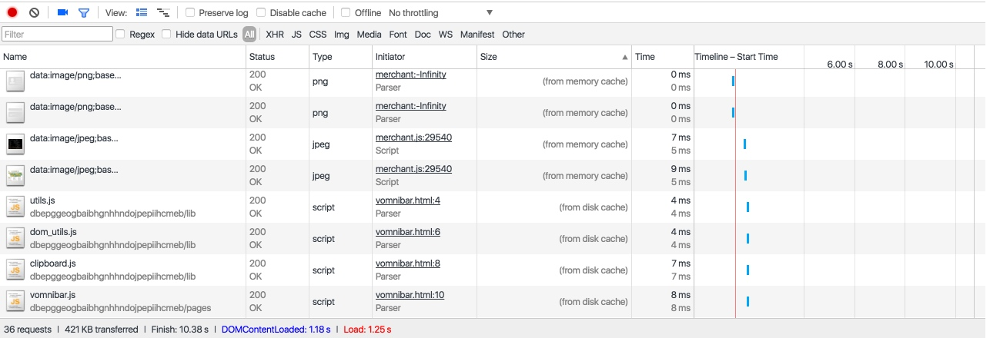
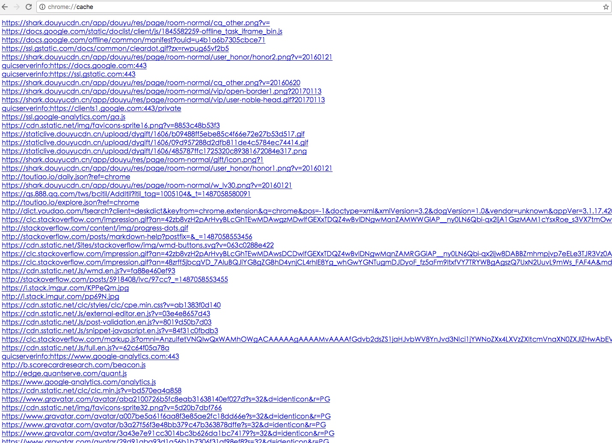
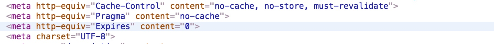
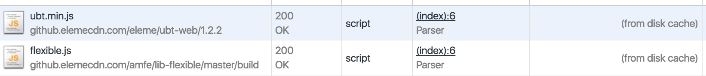
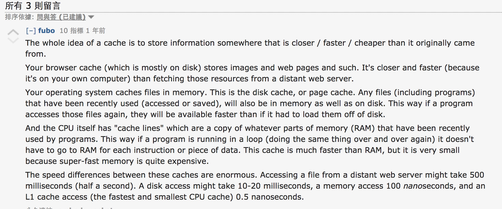

测试过程
- 打开网页可以发现图都是
from memory cache方式获取的，另外还有一些from disk cache的则是浏览器插件的 js 和 css 文件

按照网上说的(StackOverflow: Using tags to turn off caching in all browsers))，添加了清除缓存语句，然而图片还是
from memory cache，说明图片的缓存并不受 meta 控制1
2
3
4
5<meta http-equiv="cache-control" content="max-age=0" />
<meta http-equiv="cache-control" content="no-cache" />
<meta http-equiv="expires" content="0" />
<meta http-equiv="expires" content="Tue, 01 Jan 1980 1:00:00 GMT" />
<meta http-equiv="pragma" content="no-cache" />
1
2
3
<meta http-equiv="Cache-Control" content="no-cache, no-store, must-revalidate" />
<meta http-equiv="Pragma" content="no-cache" />
<meta http-equiv="Expires" content="0" />
- 在 Chrome 浏览器下，可以通过
chrome://cache地址来查看当前 chrome 缓存的文件

- 发现工程中的文件有时候是
from disk cache，有时候是from memory cache

- 加入了以下语句以后，清除缓存加刷新页面，ubt 文件加载了一次以后还是会显示
from disk cache，说明语句并没有起作用


- memory cache vs disk cache: 按照 Reddit 上的回答What is the difference between disk caching and memory caching?，浏览器缓存一般存于 disk cache，而系统缓存一般存于 memory cache



{kind=link}